清爽与刻度
切换外观，保留日期、筛选、搜索、排序与回放阅读位置。
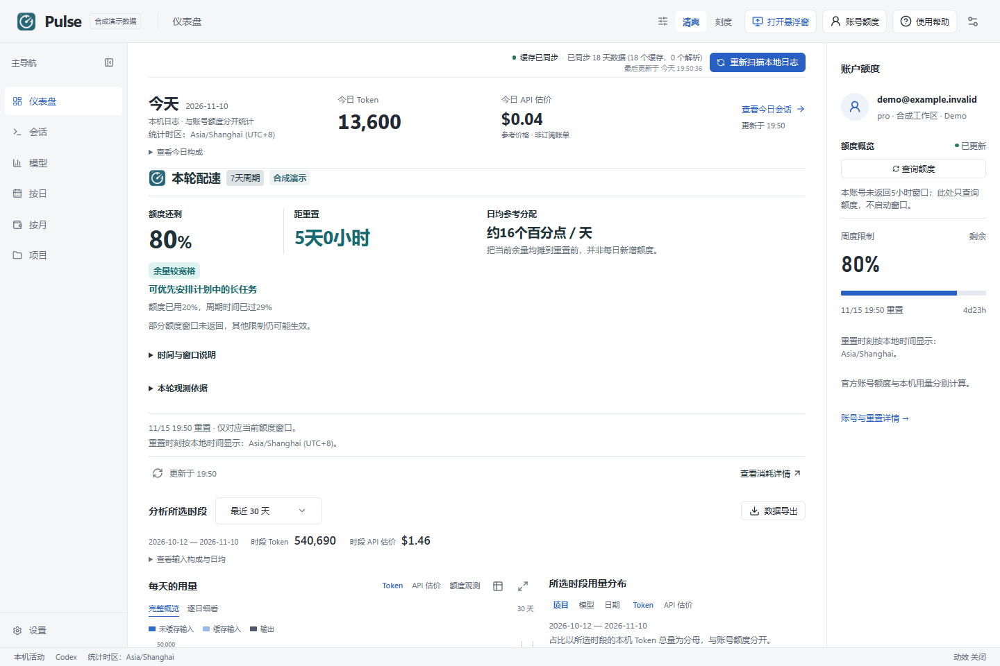
清爽 · 仪表盘 Clear dashboard
首页聚焦本轮额度、配速与今日参考成本，历史趋势进入独立用量分析。Current quota, pacing and today's reference cost stay on the dashboard; historical trends live in Usage analysis.
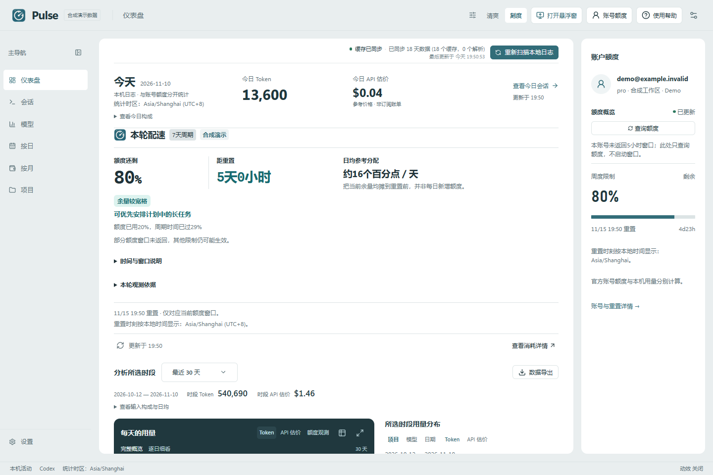
刻度 · 仪表盘 Meter dashboard
首页聚焦本轮额度、配速与今日参考成本，历史趋势进入独立用量分析。Current quota, pacing and today's reference cost stay on the dashboard; historical trends live in Usage analysis.
工作视图
仪表盘之外，从左侧用量分析查看时段趋势，也可沿模型、日期、项目或会话继续阅读。
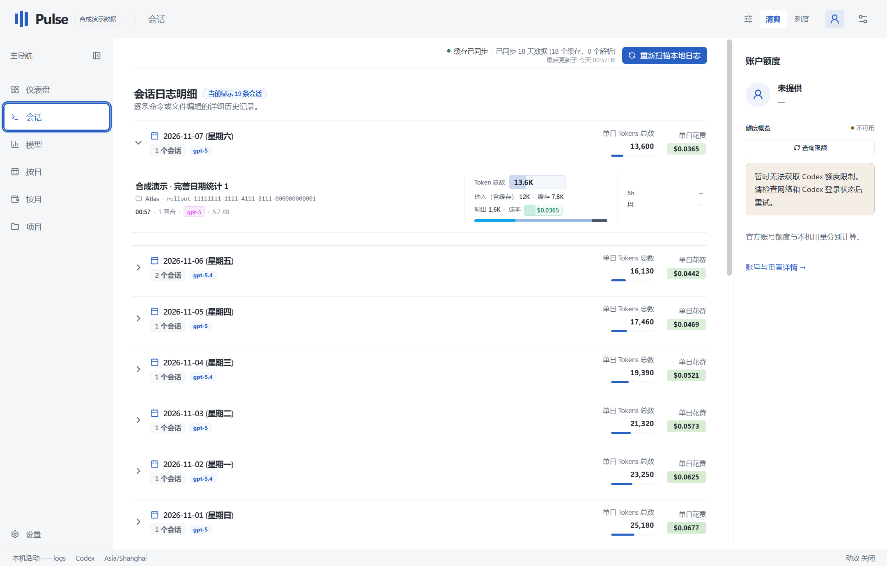
清爽 · 会话 Sessions
在已加载会话信息中搜索标题、会话 ID、模型与项目，再展开会话与代理。Search loaded session information by title, session ID, model or project, then inspect conversations and agents.
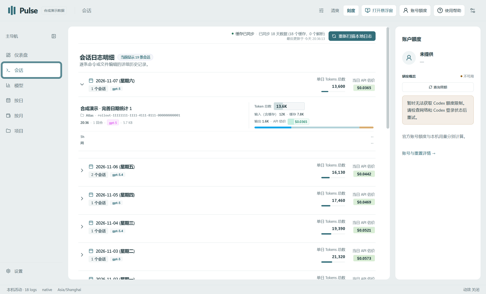
刻度 · 会话 Sessions
在已加载会话信息中搜索标题、会话 ID、模型与项目，再展开会话与代理。Search loaded session information by title, session ID, model or project, then inspect conversations and agents.
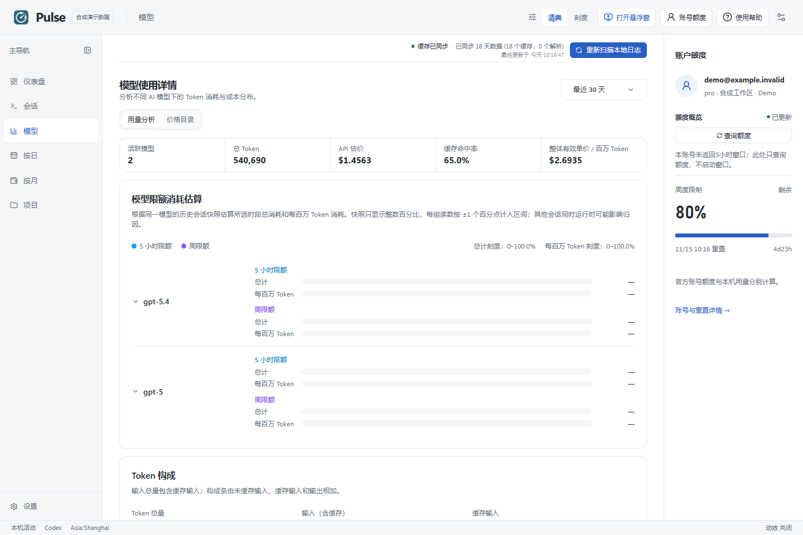
清爽 · 模型 Models
比较模型用量与输入构成；缺少额度样本会明确说明，费用为 API 参考估价。Compare model usage and input composition. Missing quota samples are explicit; costs are API reference estimates.
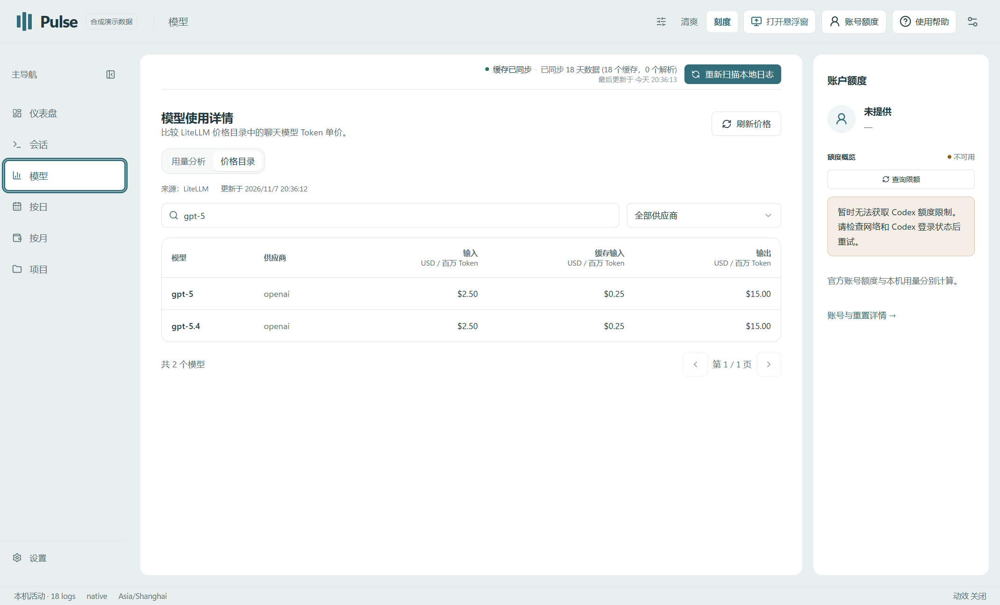
刻度 · 模型 Models
比较模型用量与输入构成；缺少额度样本会明确说明，费用为 API 参考估价。Compare model usage and input composition. Missing quota samples are explicit; costs are API reference estimates.

清爽 · 按日 Daily
保留所选时段，输入包含缓存，另列缓存分项、输出与合计，支持查看当天会话。Keep the selected period in view. Input includes cached tokens; cache breakdown, output and totals are shown separately. Open sessions for a day.
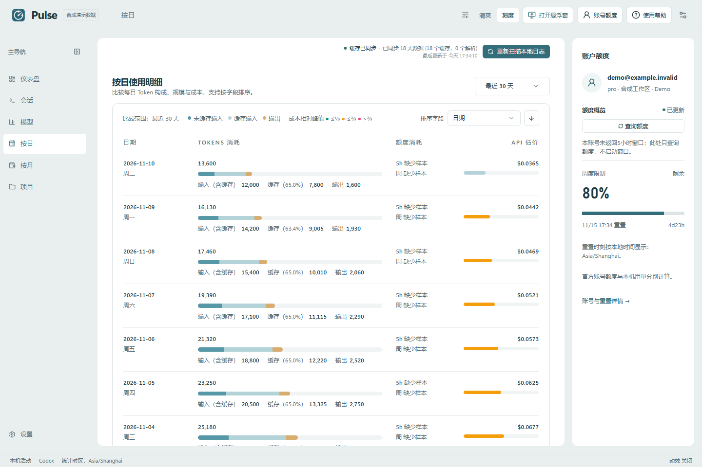
刻度 · 按日 Daily
保留所选时段，输入包含缓存，另列缓存分项、输出与合计，支持查看当天会话。Keep the selected period in view. Input includes cached tokens; cache breakdown, output and totals are shown separately. Open sessions for a day.

清爽 · 按月 Monthly
按自然月统计，区分无留存、部分留存与零活动。Review calendar months while distinguishing missing history, partial coverage, and zero activity.
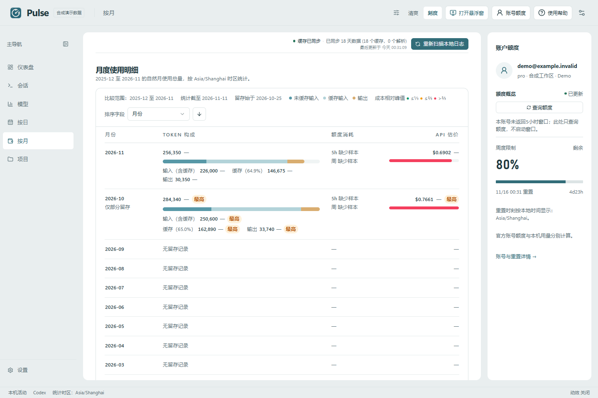
刻度 · 按月 Monthly
按自然月统计，区分无留存、部分留存与零活动。Review calendar months while distinguishing missing history, partial coverage, and zero activity.

清爽 · 项目 Projects
用可区分的项目路径比较用量与趋势，再查看项目会话。Compare usage and trends with distinguishable project paths, then explore project sessions.
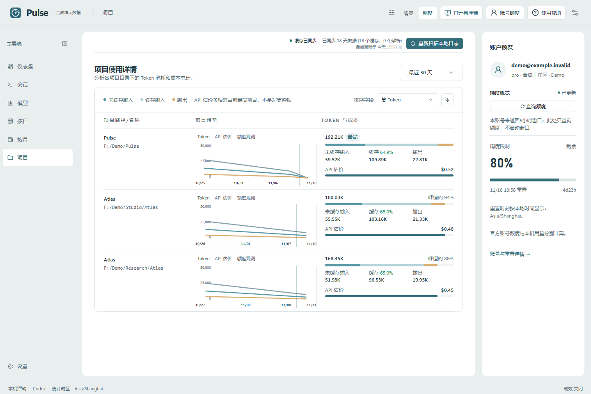
刻度 · 项目 Projects
用可区分的项目路径比较用量与趋势，再查看项目会话。Compare usage and trends with distinguishable project paths, then explore project sessions.
价格来源，明确可查。
搜索、供应商筛选与分页，显示来源、更新时间和陈旧状态。
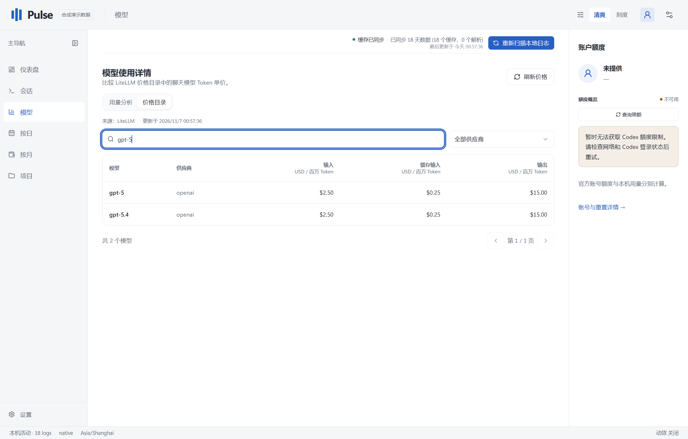
清爽 · 价格目录 Price catalog
查看输入、缓存输入与输出的每百万 Token 参考价；缺价显示未知。Compare per-million-token input, cached-input and output reference prices. Missing prices stay unknown.
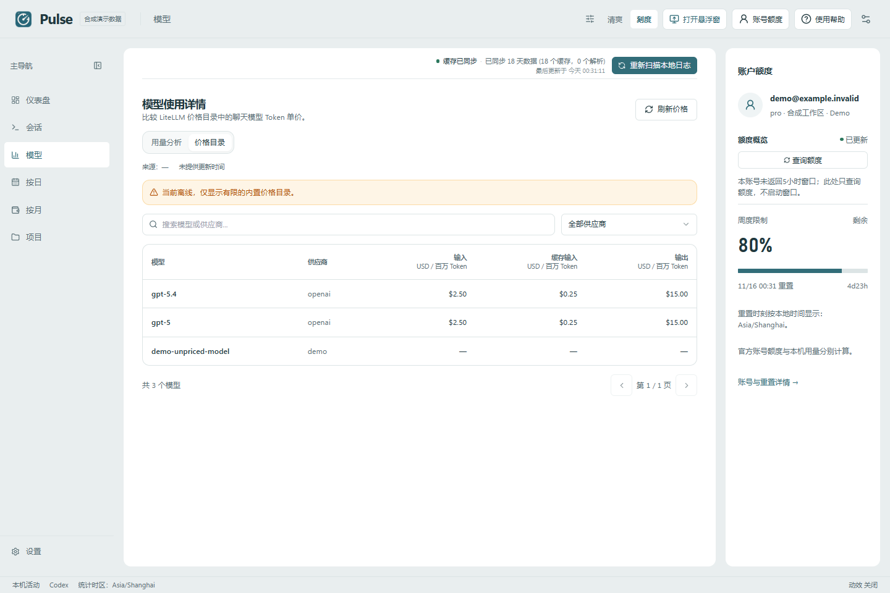
刻度 · 价格目录 Price catalog
查看输入、缓存输入与输出的每百万 Token 参考价；缺价显示未知。Compare per-million-token input, cached-input and output reference prices. Missing prices stay unknown.
回到工作的具体一刻。
完整线程、代理树、正文搜索、回合导航与原始 JSONL。
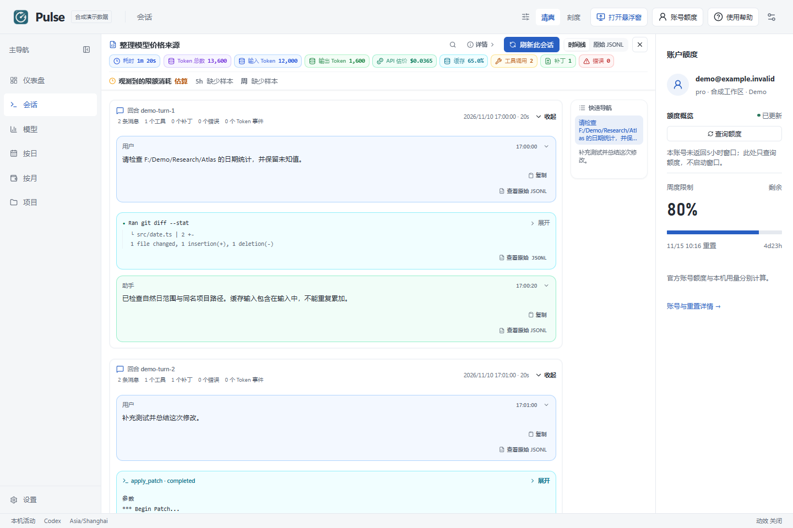
清爽 · 会话回放 Session replay
逐回合阅读消息、工具调用、补丁与问答；支持搜索、定位和原始记录。Read messages, tool calls, patches and questions by turn, with search, navigation and raw records.
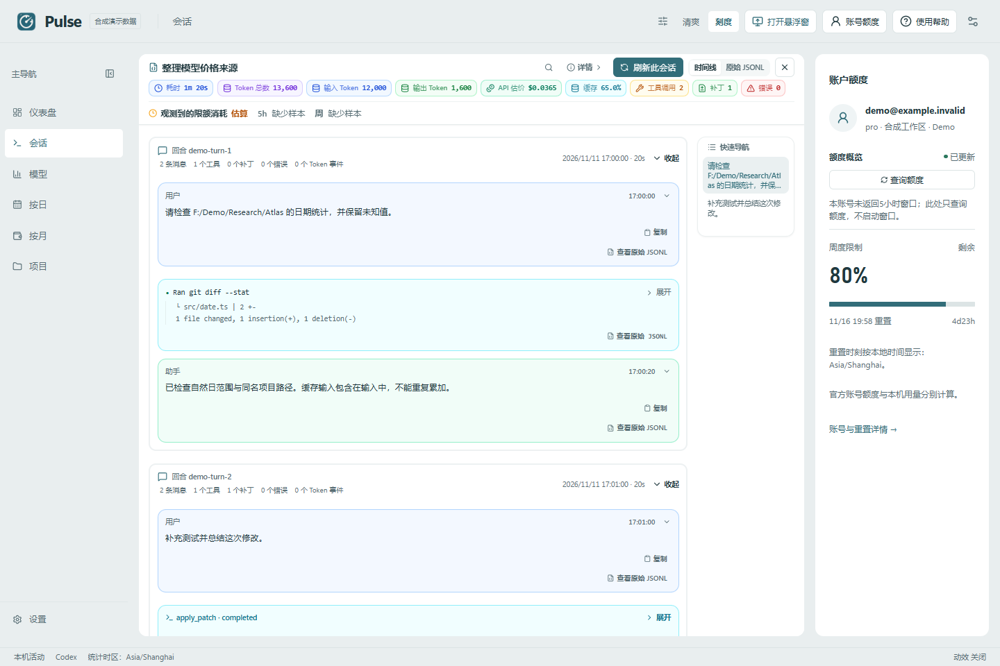
刻度 · 会话回放 Session replay
逐回合阅读消息、工具调用、补丁与问答；支持搜索、定位和原始记录。Read messages, tool calls, patches and questions by turn, with search, navigation and raw records.
偏好，各自独立。
外观、浅深色、行距和动效分别设置，所有窗口同步。
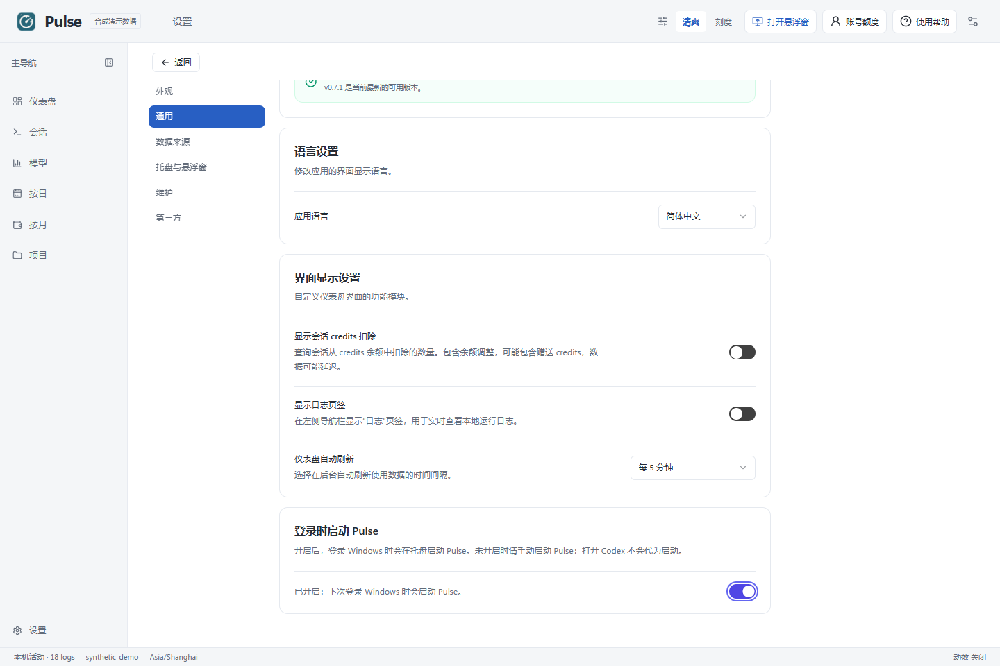
清爽 · 设置 Settings
在桌面与 Codex 设置中管理浮窗和客户端入口，其他偏好按用途分区。Manage the widget and client entry in Desktop & Codex settings, with other preferences grouped by purpose.
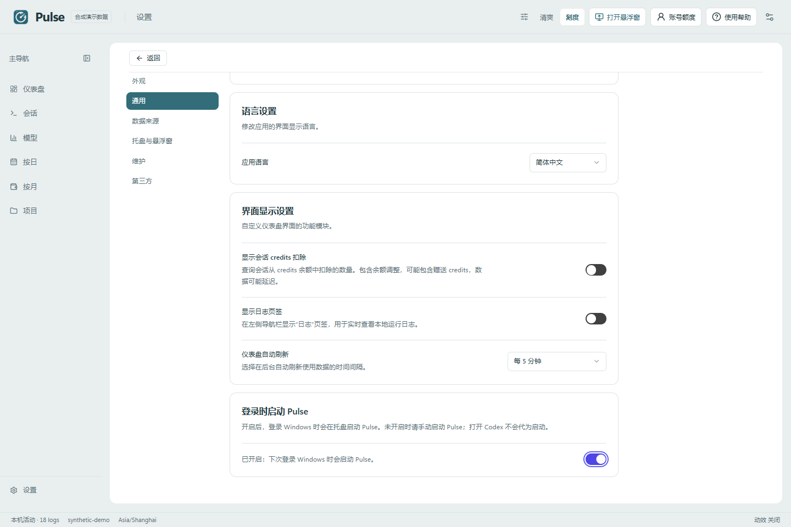
刻度 · 设置 Settings
在桌面与 Codex 设置中管理浮窗和客户端入口，其他偏好按用途分区。Manage the widget and client entry in Desktop & Codex settings, with other preferences grouped by purpose.
让额度留在工作旁边。
独立置顶窗口，按需收起、展开或隐藏。

清爽 · 紧凑悬浮窗 Compact widget
优先查看配速建议，读数年龄与刷新始终可达；展开查看完整说明。Pace advice comes first. Reading age and refresh stay within reach; expand for the full explanation.
刻度 · 紧凑悬浮窗 Compact widget
优先查看配速建议，读数年龄与刷新始终可达；展开查看完整说明。Pace advice comes first. Reading age and refresh stay within reach; expand for the full explanation.

清爽 · 展开悬浮窗 Expanded widget
展开比较时间与额度、参考分配和观测依据；必要操作固定在页脚。Expand to compare quota and time, reference allocations and observation evidence. Essential actions stay in the footer.
刻度 · 展开悬浮窗 Expanded widget
展开比较时间与额度、参考分配和观测依据；必要操作固定在页脚。Expand to compare quota and time, reference allocations and observation evidence. Essential actions stay in the footer.
在系统托盘里继续查看。
额度、今日用量与成本可独立选择，关闭主窗口后仍能使用。